人证一致客户端(IOS版)安装指南
1.打开 苹果系统 自带的浏览器“Safari”。
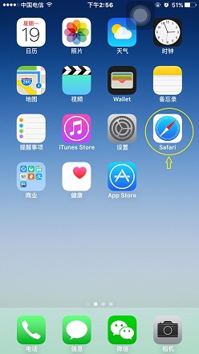
2.在浏览器中输入网址：http://218.242.60.235/CompareServer/download 并点击下载IOS版本 “人证一致”。
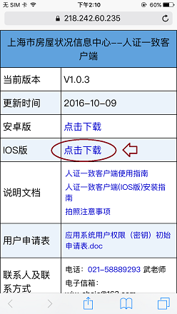
3.点击后，会弹出确认框，选择 “安装”。
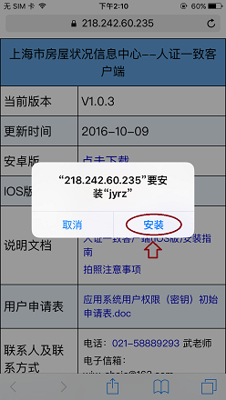
4.回到桌面，已经安装上了 “人证一致”。
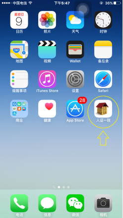
5.点击打开“人证一致”会发现无法运行，那么，我们需要让手机信任这个应用，不用着急，请继续后面操作。
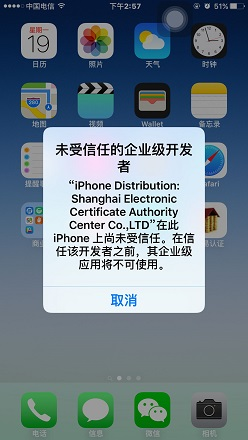
6.打开 设置 -> 通用。
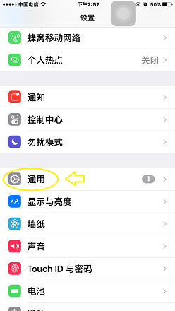
7.在“通用界面”的最下方，有一个 “描述文件与设备管理” 点进去。
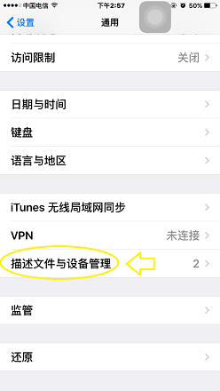
8.之后，点击如图所示的 “Shanghai Electronic Certific..”。
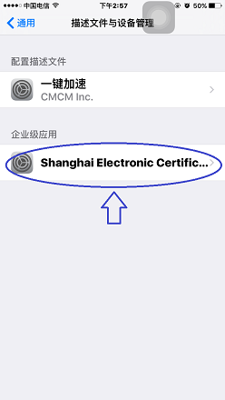
9.之后点击“信任”Shanghai Electronic Certificat..””。
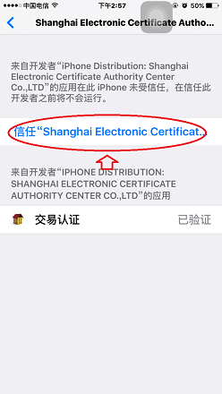
10.在弹出窗口后，点击“信任”。
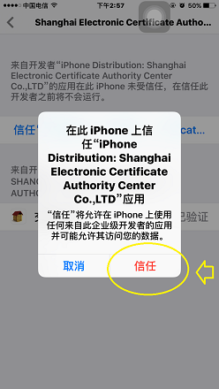
11.完成上述操作后，“人证一致”已经可以正常使用！
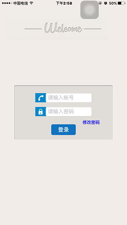